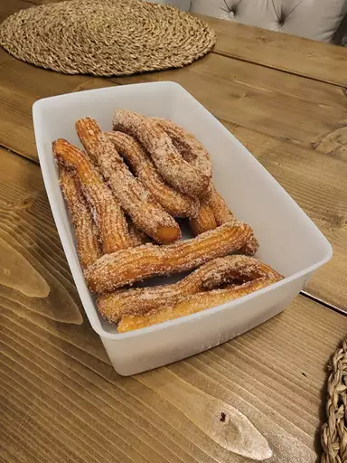

Churros

Discription
What Is a Churro?
A churro is a cinnamon- and sugar-topped fried pastry dough stick with Spanish and Portuguese origins.
Churros are similar to doughnuts, but they have ridges because they are piped out of a pastry bag.
Because they are fried instead of baked, churros have a fluffy and tender interior with a satisfyingly crispy exterior.
Ingrediants:
- Water: This recipe for churros starts with a cup of water.
- Sugar: White sugar goes into the churro dough and into the cinnamon-sugar topping.
- Salt: A pinch of salt enhances the flavors of the other ingredients.
- Oil: You'll need vegetable oil for the dough and to fry the churros.
- Flour: All-purpose flour gives the churro dough structure.
- Cinnamon: The fried churros are rolled in a cinnamon-sugar mixture before serving.
How to Make Churros Step-by-Step:
Here's a very brief overview of what you can expect when you make churros at home:
- Boil water, sugar, salt, and vegetable oil. Remove from the heat, then stir in flour.
- Transfer the dough to a pastry bag and pipe into strips.
- Fry the strips in hot oil until they're golden.
- Drain the churros, then roll in cinnamon-sugar.
Tip: Keep the oil temperature consistently between 350 and 375 F° (175 and 190 C°) as you fry.
If it gets too hot, turn off the heat and let the temperature drop down to that range.